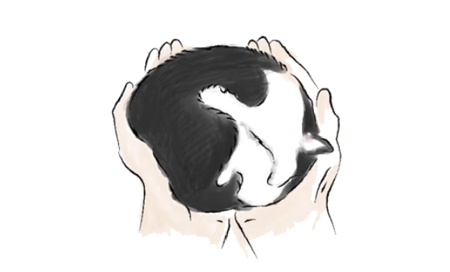

Veterinary Euthanasia Referral and End-of-Life Coordination | RESOUL
Veterinary Euthanasia Referral & End-of-Life Coordination
Compassionate guidance
when facing a difficult decision.
For some elderly, seriously ill or travel-anxious pets, being assessed by a vet in a familiar environment can ease the strain of travelling and the unease of unfamiliar surroundings. RESOUL provides administrative coordination and veterinary referral, and at the owner's request can help arrange an independent registered veterinarian for assessment while coordinating the pick-up and farewell arrangements that follow.

When to reach out: If your pet is in persistent pain, has difficulty breathing or eating, shows a clear decline in mobility, or the good days are growing fewer than the hard ones, you can first contact your own primary vet or an independent registered vet for a professional assessment. Observing quality of life only helps organise the situation. Actual arrangements depend on veterinary assessment and service availability, and do not mean euthanasia is necessarily appropriate.
Important Legal and Medical Notice
RESOUL provides administrative coordination, general information and referral to independent veterinary service providers only. RESOUL is not a veterinary practice and does not provide veterinary diagnosis, medical advice, prescriptions, medicines or veterinary procedures.
Eligibility for euthanasia, the method and medication to be used, and the associated risks are determined independently by a Hong Kong registered veterinary surgeon holding a valid practising certificate, following an assessment of the animal and the informed consent of a person having lawful authority to make the decision. Submission of an enquiry or appointment request does not constitute veterinary approval or a guarantee that euthanasia will be performed.
Veterinary services are provided directly by the relevant independent veterinary surgeon or veterinary practice. To the extent permitted by law, RESOUL does not direct or control their clinical judgment, medication or procedures. In an emergency, please contact a registered veterinary surgeon or a 24-hour veterinary clinic immediately.
How it works
Step by step, like walking beside them.
Every step is made clear, so you always know what's next.
- 1
Tell us
Basic details, area, condition and preferred time.
- 2
Organise & check
We check the independent vet's availability.
- 3
Vet contacts you
History, options and fees confirmed by the vet.
- 4
Home assessment
The independent registered vet assesses in person.
- 5
Only with consent
Proceeds only if the vet deems it suitable and you agree.
- 6
Pick-up
We arrive at the pre-arranged time to collect your pet.
- 7
Arrival notice
Basic grooming, weighing and a photo to you.
When you're ready, send a short assessment request — your pet's condition, preferred date/time and how to reach you. We'll help organise the information and arrange an independent registered vet for assessment.
FAQ
About vet referral,
things you may want to know.
RESOUL's role
No. RESOUL provides administrative coordination and veterinary referral at the owner's request; all medication and veterinary procedures are handled lawfully by the registered veterinary surgeon.
The vet's professional service and RESOUL's farewell service are separate, itemised clearly, with receipts issued per the actual arrangement.
Veterinary assessment
Only the attending independent registered vet can advise, based on each animal's individual health condition, history, quality of life and professional judgment. RESOUL does not influence or replace the vet's professional judgment.
Yes. If the vet feels further examination, palliative care, referral or a different course is needed, they may choose not to proceed.
Yes. If your primary vet offers home visits, RESOUL can coordinate the pick-up that follows; if none is available, we can help check partner vets.
Pickup and family presence
If you already know the vet appointment time, reserving pick-up at the same time reduces last-minute searching and waiting afterwards.
Usually this can be discussed with the vet beforehand; the pet's safety, a quiet environment and the vet's work come first.